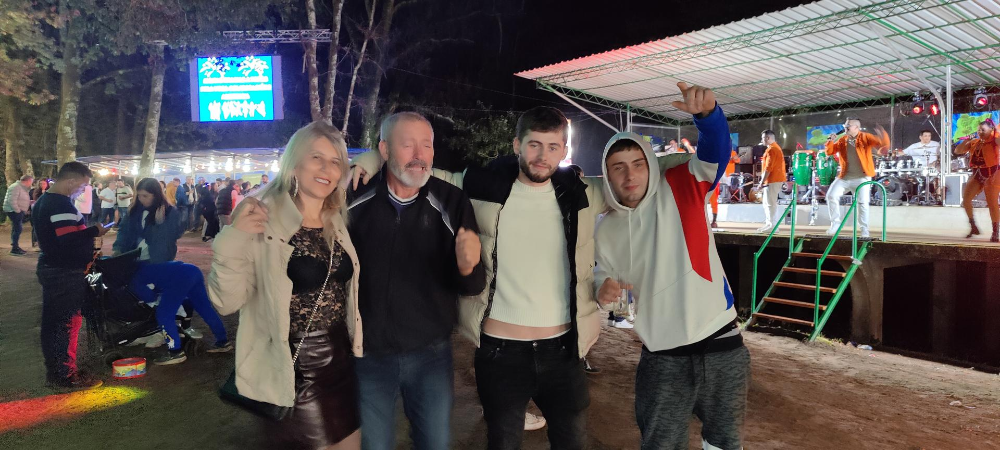
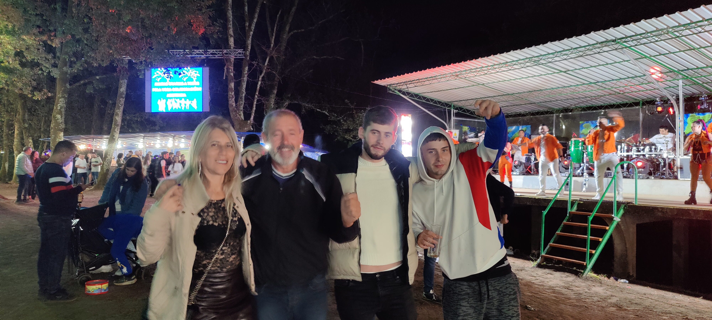
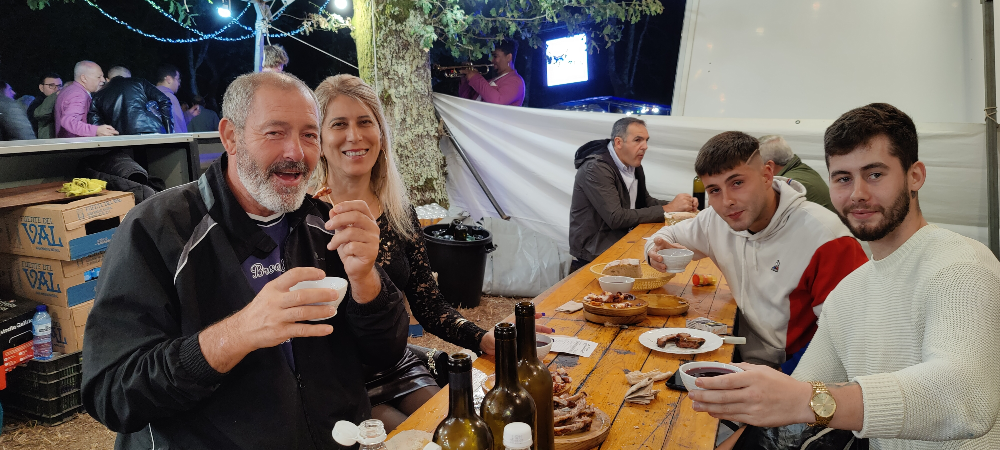

La Romería de San Ramón se celebra el 31 de agosto en las Ínsuas de Gres (Ponte Ledesma). San Ramón, patrón del municipio, reúne cada año a miles de peregrinos en un entorno natural único.
Es un pilar de la cultura local donde conviven fe, música y naturaleza. La Unión Musical Ponteledesma acompaña la jornada con marchas y piezas folclóricas gallegas.

Fe y emoción a flor de piel.

Recuerdos que quedan para siempre.

La gente que da vida a la romería.
La Unión Musical Ponteledesma, fundada en 1920, acompaña la romería con marchas militares y piezas folclóricas gallegas que emocionan a grandes y pequeños.
Dirigida por un maestro titulado, la banda mantiene viva la tradición y la educación musical en la comarca.